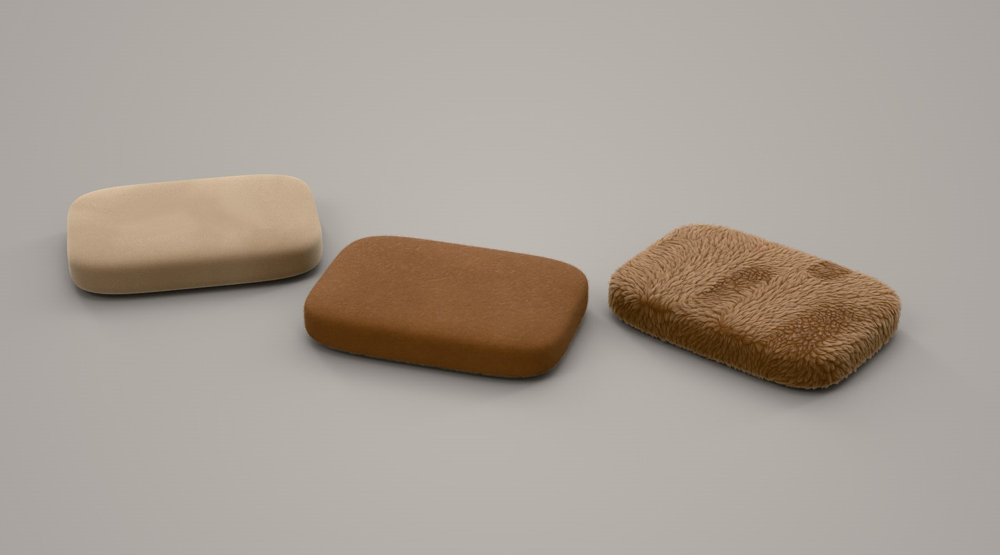

Alpha
The first versions: the renderer, the materials and the app, built up and tried out.
What's being worked on now, what comes next, and what's further out. Plans move as people use Tequila and tell us what they need; what has actually shipped is on What's new.
Updated November 6, 2026
Ready for real work, and still changing quickly.
The first versions: the renderer, the materials and the app, built up and tried out.
Every main feature is in, on Windows, Mac and Linux. What that means for you:
When these are done:
The work for the next release.
Choose Help › Test this computer…: it renders a small scene with every engine and graphics card it finds, checks the pictures and gives you a short report. Paste it on Discord. Reports from AMD cards, several cards at once, and Intel and Apple-silicon Macs help most.
A SpaceMouse turning the view, Substance materials with Adobe's own files and tools, USDZ files on an iPhone, iPad and Apple Vision Pro, and Rhino files side by side with Rhino. Each is built and tested against its format, but not yet used on the real thing. Have one? Tell us how it goes.
Planned once the work above ships.
Free signing through the SignPath Foundation, so Windows stops warning about Tequila the first time it runs.
Exploded views, camera fly-throughs, part reveals and motion blur, on top of today's turntables.
Materials from KeyShot scenes matched more closely to how KeyShot renders them.
Wanted, but not scheduled yet.
Restyle a finished render, change its background or upscale it, guided by the render's own depth, normals and masks.
Look over a scene with others and leave notes on it, made practical by Tequila's open file format.
The last three releases. Everything that was under Now and Next on November 3 shipped on November 6. Every version's full notes are on What's new.

Everything that was under Now and Next: USDZ export for AR, Rhino, FBX, 3MF and PLY, Substance materials, glossy reflections and fibres finished, suedes and Faux Fur Camel, previews ready from the start, bottles in Cycles, Test this computer, SpaceMouse, Studios and the UV editor.

The palma P8 handheld as a third sample scene, what lies just behind a thin lens shown right, textures found beside their project, and AI apps with every tool again.

A full UV editor, wireframe renders, KeyShot scenes, real fibres, spectral rendering, AMD cards and every card at once, Cycles on Linux, and Intel Macs.
Tell us on Discord, or open an issue on GitHub. What people using Tequila ask for shapes what moves up this list.